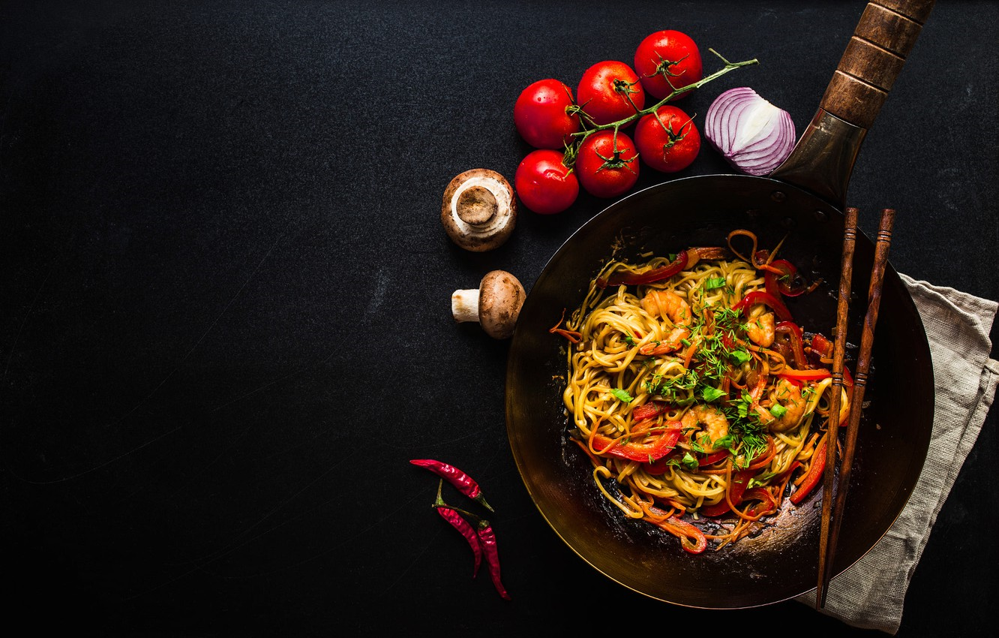

<!DOCTYPE html>
<html>
    <head>
        <link rel="stylesheet" href="../styles/details.css">
        <link rel="stylesheet" href="../styles/style.css">
        <meta charset="utf-8">
        <meta name="viewport" content="width=device-width, initial-scale=1.0">
        <title>details page</title>
         
    </head>

    <body>
      <nav class="mainNav">
        <a href="./meals.html"></a> 
        <a href="./wishList.html"></a>
     </nav>
        <article class="detailesOf">
            <!-- 
            <header>
               <h1>Wishlist</h1>
               <p>Ingridents</p>
            </header>
            <article class="Contener-ingridents">

               <figure class="ingridents">
                  
                  <label class="label">Cheese</label>
               </figure>
               <figure class="ingridents">
                  
                  <label class="label">Cheese</label>
               </figure>
               <figure class="ingridents">
                  
                  <label class="label">Cheese</label>
               </figure>
               <figure class="ingridents">
                  
                  <label class="label">Cheese</label>
               </figure>
               <figure class="ingridents">
                
                <label class="label">Cheese</label>
             </figure>
             <figure class="ingridents">
                
                <label class="label">Cheese</label>
             </figure>

             </article>
             <article>
                <p class="howToPrepare">How to Praper</p>
                <p class="disHowToPrepare">
                    2- a dish of Italian origin consisting of a usually 
                    round, flat base of leavened wheat-based dough
                    3- a dish of Italian origin consisting of a 
                    usually round, flat base of leavened wheat-based dough
                </p>
             </article>
             <figure class="videoFeg">
                <p class="fig-p">Watch The Video</p>
                <iframe  class="iframe"src="https://www.youtube.com/embed/smxiJjij4L0?autoplay=1&mute=1" 
                title="YouTube video player" allow="accelerometer; autoplay; clipboard-write; encrypted-media;
                gyroscope; picture-in-picture" allowfullscreen></iframe>
             </figure> -->

        </article>  
        <script src="../details.js"></script>
    </body>

</html>